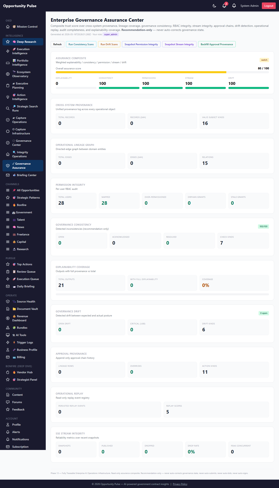
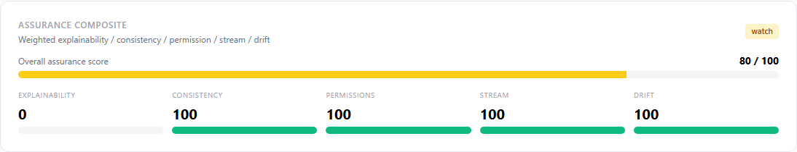
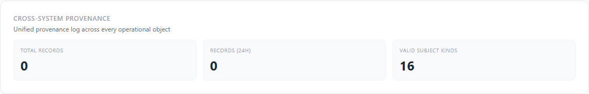
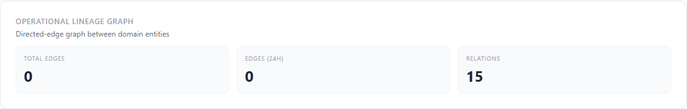
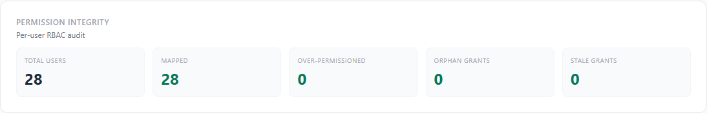
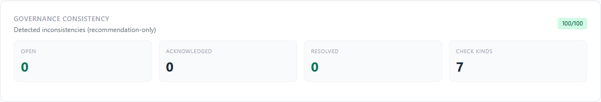
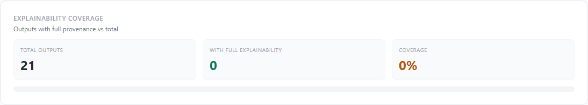
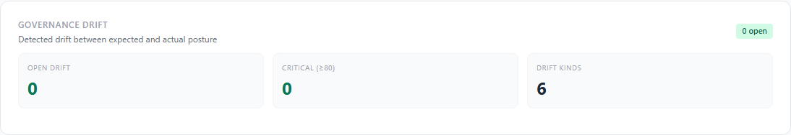
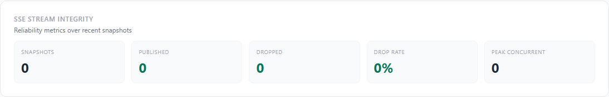

Deep Research Intelligence Engine — Phase 13
Phase 12 made the platform tenant-safe and audit-hashed every prompt. Phase 13 unifies provenance across every operational object, builds a queryable lineage graph between domain entities, completes the permission integrity surface, adds two recommendation-only governance engines (consistency + drift), introduces read-only operational replay over pursuits / outputs / workflows / SLA events, and hardens the SSE bus with integrity metrics. The new Enterprise Governance Assurance Center composites a 0–100 trust score over all of it.
10 features shipped 8 new tables opportunity_outputs org_id backfilled 10 new services 27 new API routes 17 new unit tests Full suite 2060/2060 green
Why Phase 13
Phase 12 introduced prompt provenance but only for one surface: the
AI-prompt context block. Many of the other “why does this exist?”
questions across the platform still required a SQL safari — what
cluster did this pursuit come from? what audit row approved this draft?
what compliance gap fed into this workflow? Phase 13 unifies all of that
under a single cross_provenance table + a denormalized
lineage graph + a chronological replay synthesizer.
Phase 13 also closes the consistency and drift gaps: stale-open SLAs, workflows stuck for weeks, approval bypasses, lineage holes, permission drift, and policy drift now surface as recommendation-only findings on the assurance dashboard. Every check is deterministic + auditable; nothing is auto-corrected.
Governance contract — preserved verbatim
- No auto-submit / auto-bid / auto-sign
- No auto-correct governance — every consistency + drift + permission finding is recommendation-only
- Replay is read-only — no state mutation
- No hidden lineage — every edge is recorded in
operational_lineageorcross_provenancewith a human-readable summary - Explainability is reproducible — the proposal explanation narrative is a deterministic transform over database rows; no AI inference is used to generate it
What shipped — the 10 features
| Feature | What it does | Service |
|---|---|---|
| 1. Cross-System Provenance | Unified cross_provenance log answering "why does this exist / what created it / what context produced it" for 17 declared subject kinds × 14 provenance kinds. |
crossProvenance.service.js |
| 2. Operational Lineage Graph | Denormalized directed-edge graph in operational_lineage, bounded BFS traversal (depth ≤ 6, ≤ 250 nodes), proposalAncestry() for chain-walking from an output back through provenance + pursuit + research. |
operationalLineage.service.js |
| 3. Permission Integrity | Per-user RBAC audit: over-permissioned, orphan grants (user revoked but role active), stale grants (> 90 days). Snapshot to permission_integrity. Mismatch report with severity-weighted findings + remediation. |
permissionIntegrity.service.js |
| 4. Governance Consistency Engine | 7 deterministic checks: stale_open_sla, orphan_workflow, lineage_gap, approval_bypass, conflicting_approval, invalid_transition, lineage_governance_gap. Idempotent findings persist to governance_consistency; severity-weighted overall consistency score. |
governanceConsistency.service.js |
| 5. End-to-End Proposal Explainability | buildExplanation(outputId) returns 7 named sections (output, prompt_provenance, pursuit, capture_strategy, readiness_blockers, cross_provenance, ancestry) + a deterministically rendered narrative. NO AI inference involved. |
proposalExplainability.service.js |
| 6. Governance Drift Detection | 6 drift kinds (permission / workflow / policy / escalation / approval / tenant_config). Severity scales with overshoot. Findings to governance_drift, recommendation-only. |
governanceDrift.service.js |
| 7. Approval Workflow Provenance | Append-only approval_lineage table. Synthesized from WorkflowAssignment.history; bottleneck detector ranks by durationSeconds; override tracker counts overridden actions. |
approvalProvenance.service.js |
| 8. Operational Replay | Read-only chronological merge from audit + approval_lineage + cross_provenance + sla_acknowledgements + governance_events for 4 scopes (pursuit / output / workflow / sla_event). Optional persist to replay_events. |
operationalReplay.service.js |
| 9. SSE Stream Integrity | Heartbeat / dropped / duplicate / reconnect / peak-concurrent / backpressure% metrics. Snapshot to stream_integrity. Reliability sub-score for the assurance composite. |
streamIntegrity.service.js |
| 10. Governance Assurance Center | Composite 0–100 trust score weighting explainability (20%) + consistency (25%) + permission (20%) + stream (15%) + drift (20%). Status pill (healthy / watch / elevated / critical). At /admin/deep-research/governance-assurance. |
governanceAssurance.service.js + GovernanceAssurancePage.jsx |
1. Cross-System Provenance
cross_provenance
id, organization_id, subject_kind, subject_id,
provenance_kind, source_kind, source_id, pursuit_id,
actor_email, summary, payload, created_at
VALID_SUBJECT_KINDS = pursuit / opportunity / opportunity_output /
submission_package / compliance_matrix /
compliance_item / capture_strategy /
worker_job / queue_entry / sla_event /
workflow_assignment / artifact /
proposal_artifact / rfp_attachment /
governance_event / audit_event
VALID_PROVENANCE_KINDS = source / dependency / generation / operator /
prompt / workflow / derived_from / attached_to /
evaluated_by / approved_by / spawned_by /
cancelled_by / augmented_by
2. Operational Lineage Graph
traverse(kind, id, {direction, maxDepth})
|
v
bounded BFS up to depth 6, ≤ 250 nodes
|
v
{ seed, nodes[], edges[] }
proposalAncestry(outputId)
= output → prompt_provenance → pursuit → cross_provenance sources
3. Permission Integrity
Computes per-tenant: total users vs mapped users, over-permissioned
(≥90% of all permissions granted, non-super_admin), orphan grants
(OperatorPermission row whose User is gone), stale grants (> 90 days).
Composite integrity_score = 100 - 5×orphan - 4×over - 2×stale.
Periodic snapshots to permission_integrity for trend
analysis. mismatchReport() returns a severity-ranked
findings list with remediation guidance per finding.
4. Governance Consistency Engine
| Check | Detects |
|---|---|
stale_open_sla | SLA events open > 60 days |
orphan_workflow | Workflow assignments with no assignee |
lineage_gap | OpportunityOutput with no prompt_provenance row |
approval_bypass | Workflow reached approved/rejected with no acknowledge predecessor |
conflicting_approval | Workflow ends rejected but an approve audit event exists |
invalid_transition | State transition outside legal moves |
lineage_governance_gap | Pursuit with no governance_events recorded |
All findings persist to governance_consistency with severity,
summary, recommendation. Idempotent on (check_kind, subject) — re-scans
bump severity but don’t duplicate.
5. End-to-End Proposal Explainability
Given an OpportunityOutput id, buildExplanation() returns
7 named sections + a deterministically-rendered narrative:
- output — the OpportunityOutput row itself
- prompt_provenance — audit_hash + included_sections + char_length
- pursuit — PursuitWorkspace row (when provenance points at one)
- capture_strategy — evaluator priorities, differentiators, positioning
- readiness_blockers — blockers active at generation time
- cross_provenance — every cross-system provenance link recorded against the output
- operator_actions — audit timeline + ancestry walk
The narrative paragraph is a string template fed by the same database facts — no LLM inference is used to compose it.
6. Governance Drift Detection
Four scanners + two reserved kinds:
permission_drift: OperatorPermission rows with roles not in canonical ROLE_NAMESworkflow_drift: assignments stuck > 5 days; severity scales with ageescalation_drift: SLA events at severity ≥ 75 but still openpolicy_drift: tenant in non-standard governance mode without a recent tenant.update audit event
Reserved: approval_drift, tenant_config_drift
(declared in VALID_DRIFT_KINDS; scanners arrive in Phase 14).
7. Approval Workflow Provenance
The approval_lineage table is append-only. Each row carries:
workflowAssignmentId, subject (kind+id), action (created/acknowledged/
approved/rejected/...), actor, fromState, toState, durationSeconds,
notes, overrideReason. backfillFromWorkflows() synthesizes
lineage from the existing JSONB history on WorkflowAssignment rows,
idempotent on (workflow_id, action, created_at) within 1s windows.
bottlenecks() ranks by durationSeconds for the slowest
approval steps; humanizeSeconds() renders durations for the UI.
8. Operational Replay
buildReplay({scope: 'pursuit', scopeId: '7'})
|
v
Merge & chronologically sort:
audit_events.where pursuit_id=7
+ approval_lineage.where pursuit_id=7
+ cross_provenance.where pursuit_id=7
+ governance_events.where pursuit_id=7
|
v
{ scope, scope_id, event_count, events: [...] }
persistReplay(replay) → replay_events rows for later analysis
READ-ONLY. Same merge logic for scope=output (joins via subject_kind= opportunity_output), scope=workflow (joins via workflow_assignment_id), scope=sla_event (joins via sla_acknowledgements).
9. SSE Stream Integrity
Per-org in-memory counters for heartbeats / published / dropped /
duplicate-suppressed / reconnects + peak concurrent. snapshot()
flushes counters to stream_integrity and resets them.
Integrity score = 100 - (drop / total) × 100. The Phase 12
observabilityStream summary remains the live source; Phase 13 adds the
rolling historical view.
10. Governance Assurance Center
assurance_score = round(
explainability_coverage * 0.20
+ consistency_score * 0.25
+ permission_integrity * 0.20
+ stream_integrity * 0.15
+ drift_pressure * 0.20
)
Status: healthy ≥ 85, watch ≥ 60, elevated ≥ 40, critical < 40. Composite reads from every Phase 13 service in parallel.
Screens
Governance Assurance Center — full page

Operator action bar
<Permitted name="governance.view">.Assurance Composite

Cross-System Provenance

Operational Lineage Graph

GET /operational-lineage/:kind/:id.Permission Integrity

Governance Consistency

Explainability Coverage

Governance Drift

SSE Stream Integrity

Database schema (Phase 13)
| Table | Purpose |
|---|---|
cross_provenance | Unified provenance log over every operational object. |
operational_lineage | Denormalized directed-edge graph for BFS traversal. |
governance_drift | Detected drift findings with severity + remediation. |
approval_lineage | Append-only approval chain history. |
replay_events | Read-only persisted replay event log. |
permission_integrity | Periodic permission audit snapshots. |
stream_integrity | SSE reliability snapshots. |
governance_consistency | Detected inconsistencies + recommendations. |
Plus organization_id backfilled on opportunity_outputs.
Single migration 20260516000005-deep-research-phase-13.js.
Applied to prod in 0.736s.
API routes (Phase 13)
GET /governance-assurance — composite dashboard POST /cross-provenance — record one row GET /cross-provenance/:kind/:id — per-subject lookup GET /cross-provenance/pursuit/:id — per-pursuit lookup GET /cross-provenance-summary — tenant summary POST /operational-lineage — record an edge GET /operational-lineage/:kind/:id — full lineage (BFS) GET /operational-lineage/proposal/:outputId — proposal ancestry GET /permission-integrity — live integrity POST /permission-integrity/snapshot — freeze a snapshot GET /permission-integrity/mismatches — severity-ranked report POST /governance-consistency/scan — run all 7 checks GET /governance-consistency — list findings PATCH /governance-consistency/:id — update finding status GET /explainability/output/:outputId — full explanation POST /governance-drift/scan — run all 4 detectors GET /governance-drift — list findings PATCH /governance-drift/:id — update finding status GET /approval-provenance/workflow/:id — per-workflow chain GET /approval-provenance/subject/:kind/:id — per-subject chain GET /approval-provenance/bottlenecks — slowest steps POST /approval-provenance/backfill — synthesize from workflows GET /replay/:scope/:scopeId — build replay (RO) POST /replay/:scope/:scopeId/persist — build + persist GET /stream-integrity — rolling summary POST /stream-integrity/snapshot — flush counters GET /stream-integrity/history — recent snapshots
Files changed
- Backend — new (19): 10 services + 8 models + 1 migration + 1 unit test file.
- Backend — modified: controller (+27 handlers), routes (+27 routes), models/index.js (+8 models), OpportunityOutput.js (+organizationId field).
- Frontend — new (1):
GovernanceAssurancePage.jsx. - Frontend — modified: deepResearchService (+30 client methods), App.jsx (route), Sidebar.jsx (Governance Assurance link).
- Docs: this walkthrough + 10 screenshots.
Validation
- Unit tests: 17 new Phase 13 tests covering crossProvenance VALID_*, operationalLineage MAX_DEPTH/MAX_NODES + node/relation registry, governanceConsistency VALID_CHECKS + STALE_DAYS_SLA + invalid-kind soft-fail, governanceDrift VALID_DRIFT_KINDS + thresholds + invalid-kind soft-fail, approvalProvenance VALID_ACTIONS + humanizeSeconds formats, operationalReplay VALID_SCOPES + invalid-scope rejection, streamIntegrity counter no-throw, permissionIntegrity STALE_DAYS + threshold + surface.
- Full suite: 185 suites, 2060 tests, all green (Phase 12 baseline 2043 → +17 net, zero regressions).
- Migration: Applied to prod cleanly in 0.736s; all 8 new tables + opportunity_outputs.organization_id verified via
information_schema. - Prod smoke: Authenticated call to
/api/v1/deep-research/governance-assurancereturns{assurance_score: 80, status: 'watch', sub_scores: {explainability_coverage: 0, consistency: 100, permission_integrity: 100, stream_integrity: 100, drift_pressure: 100}}— full end-to-end working. - Dashboard: Renders all 10 sections cleanly; 10 screenshots captured.
Known limitations — deferred to Phase 14
- Cross-provenance callsite wiring is partial: The table + APIs exist, but only a few callsites currently call
crossProvenance.record(). Phase 14 wires it into pursuit activation, capture strategy build, package assembly, compliance matrix build, queue enqueue, and SLA action paths. - Operational lineage edges are not auto-populated on every relevant action yet — Phase 14 adds edge writes at the same hot-paths as cross-provenance.
- 2 of 6 drift kinds (approval_drift, tenant_config_drift) have no scanner yet — declared in VALID_DRIFT_KINDS but inactive. Phase 14 lights them up.
- Replay UI is API-only in v1; an interactive lineage explorer is Phase 14.
- Explainability narrative is template-driven and English-only.
- Stream integrity counters are recorded in-memory and persisted via snapshot, but the SSE service itself (Phase 11 observabilityStream) doesn’t yet call the counter helpers on drop / duplicate / reconnect events — that wiring is Phase 14.
- Per-feature RBAC migration from legacy
checkPermissions(ROLES.ADMIN)torequirePermission(...)still pending — Phase 12 reporter exists, Phase 14 executes the migration route-by-route.
Recommended Phase 14 — Provenance + Lineage Callsite Wiring + Active Drift
- Cross-provenance callsite wiring across pursuit activation, capture strategy build, compliance matrix build, package assembly, queue enqueue, SLA action paths.
- Operational lineage auto-edges at the same hot-paths so the BFS traversal returns real graphs.
- Activate
approval_drift+tenant_config_driftscanners. - Interactive lineage explorer page — click a pursuit / output / workflow → see the BFS graph rendered with edge labels.
- Stream integrity self-wiring — observabilityStream calls streamIntegrity.recordDropped / recordDuplicate / recordReconnect internally.
- RBAC route migration sprint using the Phase 12 coverage report as the punch-list.
- Replay export — CSV / JSON download of a replay scope for compliance reviews.
- Per-tenant assurance trend charts from the
governance_integrity+permission_integrity+stream_integritysnapshot tables.